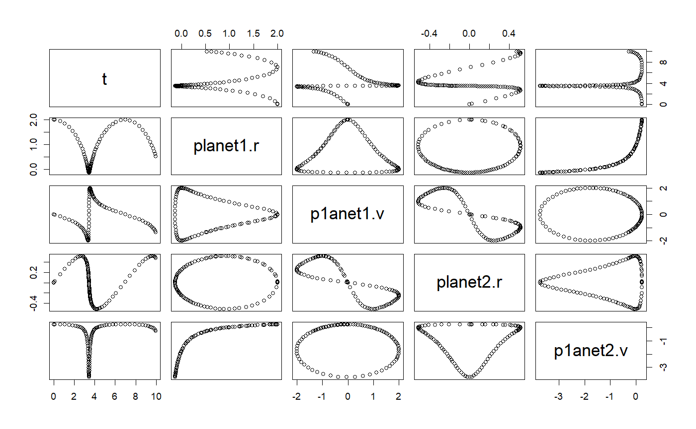

ODE class
Defines an ODE object for any solver
ODE constructor
ODE() # S4 method for ODE getState(object, ...) # S4 method for ODE getRate(object, state, ...)
Arguments
| object | a class object |
|---|---|
| ... | additional parameters |
| state | current state |
Examples
# ++++++++++++++++++++++++++++++++++++++++++++++++++ example: PendulumApp.R # Simulation of a pendulum using the EulerRichardson ODE solver suppressPackageStartupMessages(library(ggplot2)) importFromExamples("Pendulum.R") # source the class PendulumApp <- function(verbose = FALSE) { # initial values theta <- 0.2 thetaDot <- 0 dt <- 0.1 pendulum <- Pendulum() # pendulum@state[3] <- 0 # set time to zero, t = 0 pendulum <- setState(pendulum, theta, thetaDot) pendulum <- setStepSize(pendulum, dt = dt) # using stepSize in RK4 pendulum@odeSolver <- setStepSize(pendulum@odeSolver, dt) # set new step size rowvec <- vector("list") i <- 1 while (getState(pendulum)[3] <= 40) { rowvec[[i]] <- list(t = getState(pendulum)[3], # time theta = getState(pendulum)[1], # angle thetadot = getState(pendulum)[2]) # derivative of angle pendulum <- step(pendulum) i <- i + 1 } DT <- data.table::rbindlist(rowvec) return(DT) } # show solution solution <- PendulumApp() plot(solution)# +++++++++++++++++++++++++++++++++++++++++++++++++ example: PendulumEulerApp.R # Pendulum simulation with the Euler ODE solver # Notice how Euler is not applicable in this case as it diverges very quickly # even when it is using a very small `delta t``?ODE importFromExamples("PendulumEuler.R") # source the class PendulumEulerApp <- function(verbose = FALSE) { # initial values theta <- 0.2 thetaDot <- 0 dt <- 0.01 pendulum <- PendulumEuler() pendulum@state[3] <- 0 # set time to zero, t = 0 pendulum <- setState(pendulum, theta, thetaDot) stepSize <- dt pendulum <- setStepSize(pendulum, stepSize) pendulum@odeSolver <- setStepSize(pendulum@odeSolver, dt) # set new step size rowvec <- vector("list") i <- 1 while (getState(pendulum)[3] <= 50) { rowvec[[i]] <- list(t = getState(pendulum)[3], theta = getState(pendulum)[1], thetaDot = getState(pendulum)[2]) pendulum <- step(pendulum) i <- i + 1 } DT <- data.table::rbindlist(rowvec) return(DT) } solution <- PendulumEulerApp() plot(solution)# +++++++++++++++++++++++++++++++++++++++++++++++++++++++++ example KeplerApp.R # KeplerApp solves an inverse-square law model (Kepler model) using an adaptive # stepsize algorithm. # Application showing two planet orbiting # File in examples: KeplerApp.R importFromExamples("Kepler.R") # source the class Kepler KeplerApp <- function(verbose = FALSE) { # set the orbit into a predefined state. r <- c(2, 0) # orbit radius v <- c(0, 0.25) # velocity dt <- 0.1 planet <- Kepler(r, v) # make up an ODE object solver <- RK45(planet) rowVector <- vector("list") i <- 1 while (getState(planet)[5] <= 10) { rowVector[[i]] <- list(t = planet@state[5], planet1.r = getState(planet)[1], p1anet1.v = getState(planet)[2], planet2.r = getState(planet)[3], p1anet2.v = getState(planet)[4]) solver <- step(solver) planet <- getODE(solver) i <- i + 1 } DT <- data.table::rbindlist(rowVector) return(DT) } solution <- KeplerApp() plot(solution)# ~~~~~~~~~~~~~~~~~~~~~~~~~~~~~~~~~~~~~~~~~~~~ base class: FallingParticleODE.R # Class definition for application FallingParticleODEApp.R setClass("FallingParticleODE", slots = c( g = "numeric" ), prototype = prototype( g = 9.8 ), contains = c("ODE") ) setMethod("initialize", "FallingParticleODE", function(.Object, ...) { .Object@state <- vector("numeric", 3) return(.Object) })#> [1] "initialize"setMethod("getState", "FallingParticleODE", function(object, ...) { # Gets the state variables. return(object@state) })#> [1] "getState"setMethod("getRate", "FallingParticleODE", function(object, state, ...) { # Gets the rate of change using the argument's state variables. object@rate[1] <- state[2] object@rate[2] <- - object@g object@rate[3] <- 1 object@rate })#> [1] "getRate"# constructor FallingParticleODE <- function(y, v) { .FallingParticleODE <- new("FallingParticleODE") .FallingParticleODE@state[1] <- y .FallingParticleODE@state[2] <- v .FallingParticleODE@state[3] <- 0 .FallingParticleODE }